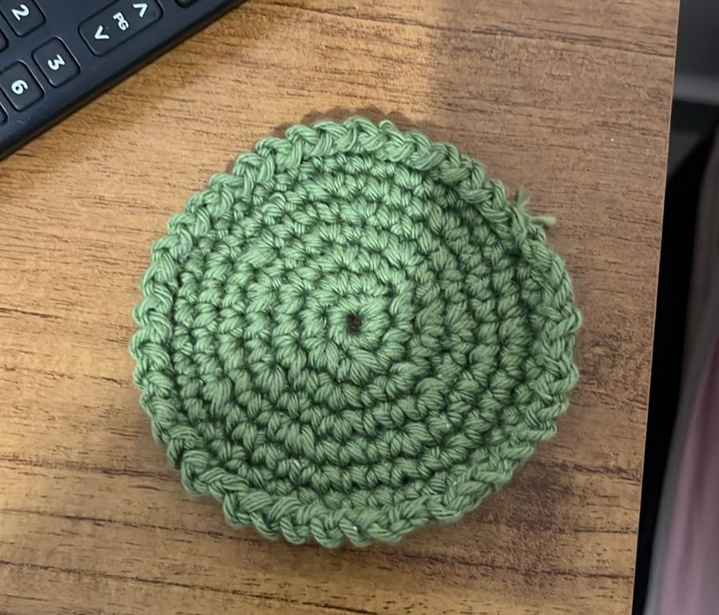

Porta Copo
Amanda_Crochezeira
25 de abril de 2026
Juiz de Fora, Brasil

Um porta-copo de crochê artesanal feito com carinho, unindo beleza, praticidade e um toque acolhedor para qualquer ambiente. Produzido com fios de qualidade e pontos delicados, ele protege superfícies contra manchas e calor, enquanto adiciona charme e personalidade à decoração. Perfeito para quem valoriza peças feitas à mão, esse acessório combina funcionalidade com o encanto único do crochê, trazendo um detalhe especial para sua mesa ou cantinho do café.